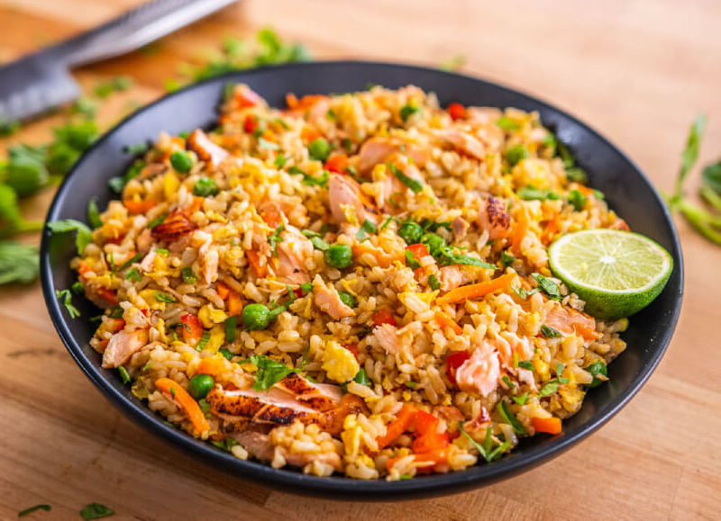

Salmon Kimchi Fried Rice
Description
Spice up your evening with a delectable salmon and kimchi fried rice.
Recipe makes 2 servings.
Ingredients
- Sockeye salmon filet (400g)
- Red pepper, diced (1 cup)
- Yellow pepper, diced (1 cup)
- Onion, diced (1 cup)
- Garlic, minced
- Ginger, minced
- Jasmine rice
- Three whole eggs
- Frozen peas
- Kimchi
- Soy sauce
- Avocado oil
- Salt and pepper
Steps
- Preheat oven to 315 F
- Line baking sheet with aluminum foil or drizzle with oil
- Place salmon filet on baking sheet, season with salt and pepper
- Bake salmon for 20 minutes
- Cook rice on stovetop or with rice cooker
- Preheat frying pan over medium-high heat, then add oil
- Sautee vegetables (excluding garlic and ginger) for a few minutes, stirring or flipping occasionally
- Add garlic and ginger and continue to stir or flip occasionally, cook until vegetables are slightly tender
- Blanche frozen peas for 90 seconds
- Preheat frying pan over medium heat, then add oil
- Crack eggs into frying pan, scramble for 20 seconds, season with salt
- Add rice into the pan, stir to combine ingredients, add dash of soy sauce
- Add salmon, vegetables, peas into the pan, stir to combine ingredients
- Add kimchi and kimchi juices into the pan
- Continue to stir and cook ingredients for a few minutes, then remove from pan